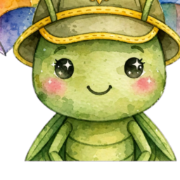
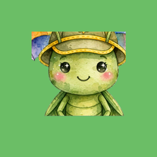
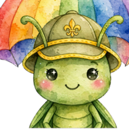
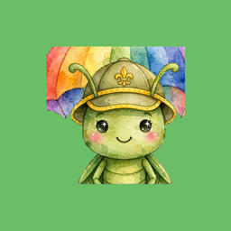

🐛 吉祥物裁法・決策記錄
✅ 已採用 A（全身構圖）。出街嘅
想轉後備構圖：
icons/icon-512.png・icon-192.png・
icon-512-maskable.png・apple-touch-icon.png 全部係 A 裁法。想轉後備構圖：
CROP=C bash tools/build-mascot.sh（B／C 都得），全套 icon 即時重生。同一張 img/ghmeeting_mascot.src.png（原檔，1024² 去背），三個裁法。
左邊 A 係用緊嗰個；B／C 留低做後備，第時想換主角特寫就一句 command 搞掂。
A · 全身 ✅ 已採用
彩虹傘完整出晒，草蜢喺下面
品牌元素最齊，48px 下草蜢偏細但認得出
品牌元素最齊，48px 下草蜢偏細但認得出
B · 主角特寫（後備 1）
裁到草蜢做主角（佔畫面 90% 闊），彩虹傘變背景弧
48px 都睇到成隻草蜢連腳
48px 都睇到成隻草蜢連腳

72px
48px

iOS 綠底深底
C · 中景（後備 2・第 2 選擇）
傘頂留多啲（見到彩虹），草蜢大一級
兩邊都有，但 48px 仍然偏細
兩邊都有，但 48px 仍然偏細

72px
48px

iOS 綠底深底
構圖數據（44 格網分析原圖）：彩虹傘佔上面 ~55%，草蜢佔下面 ~30%（得 15/44 格闊）。
所以無論邊個裁法，48px 下草蜢都唔會好大 —— A 保留晒品牌元素（彩虹傘），認得到係童仔 GH，所以揀 A。
三個裁法數據
| 裁法 | 構圖 | 草蜢佔畫面 | 48px 可讀性 |
|---|---|---|---|
| A 全身 | 彩虹傘完整 + 草蜢全身 | 約 34% 高 | ⚠️ 草蜢糊，似得個頭 |
| B 特寫 | 草蜢做主角 + 傘做背景弧 | 約 62% 高 | ✅ 睇到成隻連腳 |
| C 中景 | 傘頂保留較多 + 草蜢全身 | 約 48% 高 | 🆗 中間落墨 |
第時想再靚啲
如果你有草蜢全身正面、腳清楚嘅版本（或者想要佢企定定、雙手攤開嘅吉祥物公仔構圖），
掉張 1024² 去背 PNG 入 img/ghmeeting_mascot.png，跑
bash tools/build-mascot.sh —— 構圖好嘅話 A 裁法都已經好靚，唔使犧牲彩虹傘。